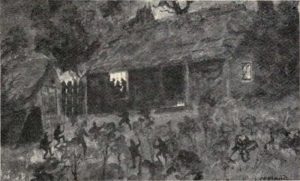
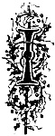
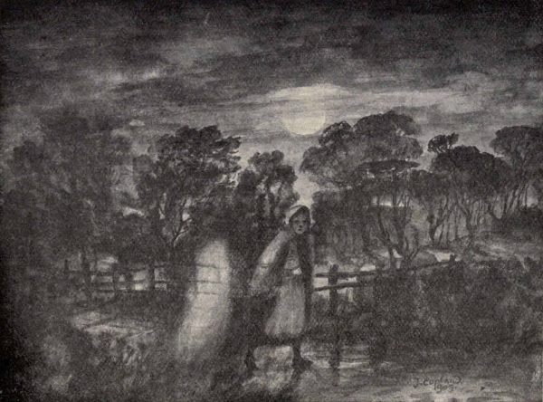
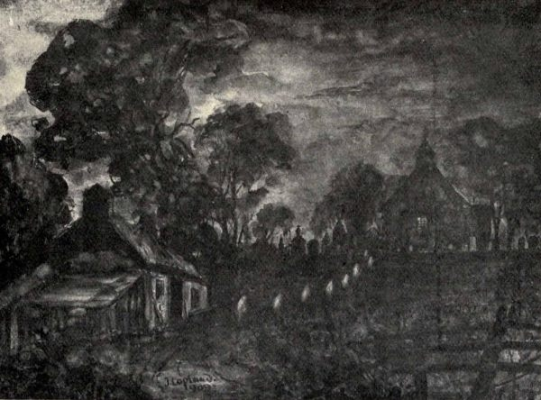
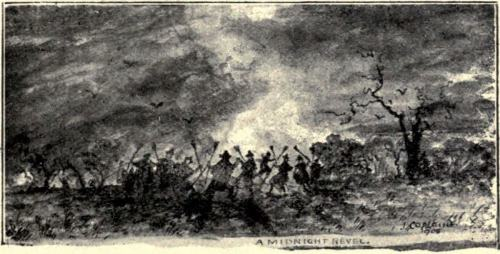
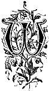
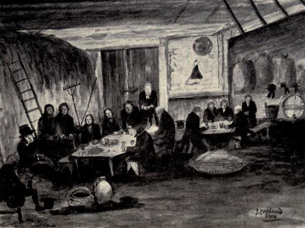

‘Ca, cuttie, ca!
A’ the luck o’ Liethin Ha’
Gangs wi’ me to Bodsbeck Ha.’
Liethin Ha’ was, in a few years, in ruins, and ‘bonnie Bodsbeck’ flourished under the luck-bringing patronage of the brownie.”(64)
In the olden days there was a brownie attached to the family of Maxwell of Dalswinton said to be so energetic as to easily perform the work of ten men, and threshing with such vigour as to keep the servants awake at nights with the dirling of its elfin flail.
He seems to have been passionately devoted to the service of the Laird’s daughter, a strikingly comely dame. A lover naturally appeared, and their meetings were made all the easier through Brownie’s help, and eventually he saw his beloved lady married to a husband he heartily approved of.
“In course of time the hour of need came nigh, and a servant was sent away to bring the ‘canny wife.’ The night was dark as a December night could be, and the wind was heavy among the groves of oak. The brownie, enraged at the loitering serving-man, wrapped himself in his lady’s fur cloak; and though the Nith was foaming high flood, his steed, impelled by supernatural spur and whip, passed it like an arrow. Mounting the dame behind him, he took the deep water back again to the amazement of the worthy woman, who beheld the red waves tumbling around her, yet the steed’s foot-locks were dry.
‘Ride nae by the auld pool,’ quo’ she, ‘lest we should meet wi’ Brownie.’
He replied—‘Fear nae, dame, ye’ve met a’ the brownies ye will meet.’
Placing her down at the hall gate, he hastened to the stable, where the servant lad was just pulling on his boots; he unbuckled the bridle from his steed, and gave him a most afflicting drubbing.”
There is a sequel to this story which does not end happily: “It was the time of the Reformation; and a priest, more zealous than wise, exhorted the Laird to have this Imp of Heathenism baptised, to which he in an evil hour consented, and the worthy reforming saint concealed himself in the barn to surprise the brownie at his work. He appeared like a little, wrinkled, ancient man, and began his nightly moil. The priest leapt from his ambush, and dashed the baptismal water in his face, solemnly repeating the set form of Christian rite. The poor brownie set up a frightful and agonising yell, and instantly vanished never to return.”(65)
Allan Cunningham further tells of a brownie of a humorous turn of mind who held sway about Newabbey:—“The Abbey lands in the parish of Newabbey, were the residence of a very sportive one. He loved to be, betimes, somewhat mischievous. Two lasses, having made a fine bowlful of buttered brose, had taken it into the byre to sup while it was yet dark. In the haste of concealment they had brought but one spoon; so they placed the bowl between them, and took a spoonful by turns.
‘I hae got but three sups,’ cried the one, ‘an’ it’s a’ done!’
‘It’s a’ done, indeed,’ cried the other.
‘Ha, ha!’ laughed a third voice, ‘Brownie has gotten the maist o’t.’”(66)
As indicating the great skill in gathering the sheep together, the following tradition lingers in Galloway of a brownie who had spent the night long at this task. In the morning not only had he the sheep together, but amongst them was half a dozen hares. “Deil tak’ thae wee grey beasties,” he muttered, when this was pointed out to him, “they cost me mair fash than a’ the lave o’ them.”
In Scottish literature the brownie has a distinctive place, his unique and wonder-creating personality being used with rare effect. It is, however, the particular part of Scotland we are dealing with—the south-west—that has produced the most typical examples, in prose as well as in poetry, for Dumfriesshire claims that fine Covenanting story, “The Brownie of Bodsbeck,” while Galloway has yielded that inimitable poetical gem, “The Brownie of Blednoch,” the quotation of which in full may fittingly close the chapter:—
The Brownie of Blednoch.
There cam a strange wight to our town-en’
And the fient a body did him ken’;
He tirled na lang, but he glided ben
Wi’ a dreary, dreary hum.
His face did glare like the glow o’ the west,
When the drumlie cloud has it half o’ercast;
Or the struggling moon when she’s sair distrest—
O sirs! ’twas Aiken-drum.
I trow the bauldest stood aback,
Wi’ a gape and a glower till their lugs did crack,
As the shapeless phantom mum’ling spak—
“Hae ye wark for Aiken-drum?”
O had ye seen the bairns’ fright,
As they stared at this wild and unyirthly wight,
As he stauket in ’tween the dark and the light,
And graned out, “Aiken-drum!”
“Sauf us!” quoth Jock, “d’ye see sic een;”
Cries Kate, “There’s a hole where a nose should hae been;
And the mouth’s like a gash which a horn had ri’en;
Wow! keep’s frae Aiken-drum!”
The black dog, growling, cowered his tail,
The lassie swarfed, loot fa’ the pail,
Rob’s lingle brack as he men’t the flail,
At the sight o’ Aiken-drum.
His matted head on his breast did rest,
A lang blue beard wan’ered down like a vest;
But the glare o’ his e’e nae Bard hath exprest,
Nor the skimes o’ Aiken-drum.
Roun’ his hairy form there was naething seen
But a philibeg o’ the rashes green,
And his knotted knees played ay knoit between;
What a sight was Aiken-drum!
On his wauchie arms three claws did meet,
As they trailed on the grun’ by his taeless feet;
E’en the auld guidman himsel’ did sweat,
To look at Aiken-drum.
But he drew a score, himsel’ did sain,
The auld wife tried, but her tongue was gane;
While the young ane closer clasped her wean,
And turned frae Aiken-drum.
But the canny auld wife cam’ till her breath,
And she deemed the Bible might ward aff scaith,
Be it benshee, bogle, ghaist, or wraith—
But it fear’dna Aiken-drum.
“His presence protect us!” quoth the auld guidman;
“What wad ye, whare won ye—by sea or by lan’?
I conjure ye speak—by the Beuk in my haun!”
What a grane gae Aiken-drum.
“I lived in a lan’ whar we saw nae sky,
I dwalt in a spot whare a burn rins na by;
But I’se dwall now wi’ you, if ye like to try—
Hae ye wark for Aiken-drum?
“I’ll shiel’ a’ your sheep i’ the mornin’ sune,
I’ll berry your crap by the light o’ the moon,
And baa the bairns wi’ an unken’d tune,
If ye’ll keep puir Aiken-drum.
“I’ll loup the linn when ye canna wade,
I’ll kirn the kirn, and I’ll turn the bread;
And the wildest fillie that ever ran rede
I’se tame’t,” quoth Aiken-drum!
“To wear the tod frae the flock on the fell—
To gather the dew frae the heather-bell—
And to look at my face in your clear crystal well,
Might gie pleasure to Aiken-drum.
“I’se seek nae guids, gear, bond, nor mark;
I use nae beddin’, shoon, nor sark;
But a cogfu’ o’ brose ’tween the light and dark,
Is the wage o’ Aiken-drum.”
Quoth the wylie auld wife, “The thing speaks weel;
Our workers are scant—we hae routh o’ meal;
Gif he’ll do as he says—be he man, be he de’il,
Wow! we’ll try this Aiken-drum.”
But the wenches skirled “He’s no’ be here!
His eldritch look gars us swarf wi’ fear,
And the fient a ane will the house come near,
If they think but o’ Aiken-drum.
“For a foul and a stalwart ghaist is he,
Despair sits brooding aboon his e’e bree,
And unchancie to light o’ a maiden’s e’e,
Is the grim glower o’ Aiken-drum.”
“Puir slipmalabors! ye hae little wit;
Is’tna Hallowmas now, and the crap out yet?”
Sae she silenced them a’ wi’ a stamp o’ her fit;
“Sit yer wa’s down, Aiken-drum.”
Roun’ a’ that side what wark was dune,
By the streamer’s gleam, or the glance o’ the moon;
A word or a wish—and the Brownie cam’ sune,
Sae helpfu’ was Aiken-drum.
But he slade ay awa’ or the sun was up,
He ne’er could look straught on Macmillan’s cup;[28]
They watched—but nane saw him his brose ever sup,
Nor a spune sought Aiken-drum.
On Blednoch banks, and on crystal Cree,
For mony a day a toiled wight was he;
While the bairns played harmless roun’ his knee,
Sae social was Aiken-drum.
But a new-made wife, fu’ o’ rippish freaks,
Fond o’ a things feat for the first five weeks,
Laid a mouldy pair o’ her ain man’s breeks;
By the brose o’ Aiken-drum.
Let the learned decide, when they convene,
What spell was him and the breeks between;
For frae that day forth he was nae mair seen,
And sair missed was Aiken-drum.
He was heard by a herd gaun by the Thrieve,
Crying “Lang, lang now may I greet and grieve;
For alas! I hae gotten baith fee and leave,
O, luckless Aiken-drum.”
Awa’! ye wrangling sceptic tribe,
Wi’ your pros and your cons wad ye decide
’Gain the ’sponsible voice o’ a hale country-side
On the facts ’bout Aiken-drum?
Though the “Brownie o’ Blednoch” lang be gane,
The mark o’ his feet’s left on mony a stane;
And mony a wife and mony a wean
Tell the feats o’ Aiken-drum.
E’en now, light loons that jibe and sneer
At spiritual guests and a’ sic gear,
At the Glashnoch Mill hae swat wi’ fear,
And looked roun’ for Aiken-drum.
And guidly fo’ks hae gotten a fright,
When the moon was set, and the stars gied nae light,
At the roaring linn in the howe o’ the night,
Wi’ sughs like Aiken-drum.

Wraiths and Warnings.
“There are more things in heaven and earth, Horatio,
Than are dreamt of in our philosophy.”
—Hamlet.
n the bygone days of a more primitive and simple life, widespread belief existed in the outward and physical manifestation of the call of Death, which took the form of what were commonly known as “wraiths” and “warnings.”
The “wraith” was the natural-looking semblance of one about to die, or just immediately dead, appearing life-like, usually at some distance from the body, but so realistic as to be unvaryingly mistaken for the actual person. A further point is, that such appearances gave rise to no fear or apprehension unless seen at some considerable distance from their usual surroundings.
The “warning,” on the other hand, refers to noises and sounds heard within the immediate precincts of the sick-chamber, but without any physical explanation or evidence of the cause, although the nature of the sound or other phenomenon might be simple enough in character. Such unusual occurrences happening under usual circumstances carried with them the superstitious significance of the near presence of death.
In dealing, firstly, with the wraith, it may at once be noted that a great many accounts of such appearances are still existent in the south-west of Scotland.
The following is a hitherto unrecorded instance which happened in the early twenties of last century in the neighbourhood of Dalbeattie:—
“In the late autumn of the year 182—, an old man, a cottar on a farm in the parish of Buittle, was raising a basketful of potatoes in his ‘yaird,’ on the rise of the hill slope that lifts itself into rugged prominence as it stretches towards Palnackie past Kirkennan Woods. His son William was away at Glencaple Quay (a distance of twelve miles as the crow flies) with a Water of Urr sloop unloading timber, and was not expected home before the end of the week. The old man had just finished his task when he very distinctly saw the figure of his son passing from the roadway and turn round the end of the house as if to go inside. Somewhat surprised, the old man lifted his basket and walked down the garden path into the kitchen, where his daughter Margaret was preparing the mid-day meal.
‘What brings Wullie hame ’ee noo, and whaur’s he gaun?’ was the double query he put to his daughter.
‘Guidsake, faither! what are ye talkin’ aboot? There’s nae Wullie here,’ answered Margaret, startled out of her usual composure.
‘But I saw him come roon’ the house-en’, and he had a queer drawn look aboot his face that fairly fleyed me! I houp there’s naething happened him!’
The old man, almost absently, looked at the brass-faced clock ticking in the corner between the fireplace and the white-scoured dresser, and saw that it was ten minutes to twelve. In the evening twilight a messenger rode up to the little homestead and broke the sad news of the death by drowning of ‘Wullie,’ a few minutes before twelve that day, when the tide was at its full, and almost at the very time that his father had seen his semblance, with drawn face, pass the house-en’. He had fallen between the side of the sloop and the quay wall, to almost immediately disappear, very probably having received serious injury as he fell.”
Another typical example may be cited from the Glencairn district, the folk-lore of which has been so exhaustively collected by Mr John Corrie:—
“One afternoon a well-known lady, Mrs G——, was setting out to call upon a neighbour who lived about half-a-mile distant across the moor, when she saw her friend, evidently bent upon the same errand, coming towards herself. Retracing her steps, she entered the house again to wait her friend’s arrival. Her expected visitor not appearing, Mrs G—— went to the door to see what detained her, but although she looked in every direction there was no one to be seen. As the afternoon was now well advanced, Mrs G—— decided to defer her visit until the following day. Walking across on the morrow, she remarked in the course of conversation:
‘I saw you on the way to see me yesterday! What made you turn half-road?’
‘Me coming to see you!’ exclaimed her friend, ‘I can assure you I wasna that, for I was scarce frae my ain fireside the hale day.’
A week later Mrs G——’s friend and neighbour died, and her corpse was carried to the churchyard, over the very track her wraith had appeared on the afternoon of her intended call.”(67)
At Dunreggan, Moniaive, as curious an instance happened some fifty years ago, when the father of a schoolboy, sitting at the fireside with his wife, saw the semblance of his son enter the cottage and pass “doon the hoose.” Not greatly surprised, but still wondering, he called his wife’s attention to the early return of the boy from school. Very sceptical, and assuring him that he must be mistaken, the good woman went herself into the room, to find nothing there, although she looked behind the door and elsewhere to make sure that no boyish prank was being played. Despite her assurances the husband was not convinced, and remained in a very uneasy state of mind, when soon afterwards his worst fears were realised, and the body of the boy was brought home, to pass through the kitchen to be laid upon the bed—“doon the hoose.”
MacTaggart, in his Gallovidian Encyclopedia, gives several examples, of which the following instance which happened to a very intimate friend, of whose intelligence and probity he had the highest regard, may be given:—
“Last vacans” (quoth he), “I gaed awa’ to my uncle’s, or rather my grandfather’s, to stap a week or twa, and play mysel’ amang the Moorhills, neive trouts, and learn twa or three tunes on the flute. Weel, I hadna been there ony time aworth till I saw as queer a thing as ought ever I saw, or may see. A’m out at the house-en’ ae morning, about aught o’clock, and a bonny harrest morning it was: Weel, ye see, a’m making a bit grinwan to mysel’ to tak’ down wi’ me to a deep pool that was i’ the burn fu’ o’ trouts, and this I was gaun to do after breakfast time, for as yet I hadna gat my sowens. Weel, ye see, I’m tying on my grin wi’ a bit o’ wax’d thread, whan by the house-en’ comes my auld grandfather wi’ his clicked staff, that he ay had wi’ him, in ae han’, and in the tither his auld loofie o’ a mitten, which he hadna as yet drawn on. He cam’ close by me, and gaed a kinn o’ a luik at what I was doing, then wised himsel’ awa’ alang the hip o’ o’e hill, to look how the nowt did, and twa young foals, as was his usual wont. Weel, awa’ he gaed; I was sae thrang when he gaed by that I never spake to him, neither did he to me, and I began to think about this when I was mair at leisure, and gaed a glent the road he tuik, just to see like how the auld body was coming on, for he was on the borders o’ four score, yet a fearie fell auld carle, and as kine a body as ever I saw; sae I gaed a glent, as I was saying, alang by the scarrow o’e hill, and did see him winglan awa’ by the back side o’ the auld saugh Lochan. And in course o’ time, maybe no’ ten minutes after, I stepped my waes in to see gin I could get a cap or twa o’ sowens and get off to the trouts; whan wha think ye’s just sitting on the sattle-stane at the ingle-cheek taking a blaw o’ the pipe—but auld granfaither.
‘Lord, preserve me,’ said I, and said na mair; I glowr’d about me awsomly.
‘What’s wrang wi’ the boy?’ (quoth my auntie).
‘Come out’ (quo’ I) ‘and I’ll tell ye,’ which she did.
We gaed up the hill a bit, to be sure, as she said, o’ the thing I had seen; we saw nought ava, and came back again in an unco way. That vera night granfaither grew ill, which was on a Saturday teen, and he was dead, puir body, or sax o’clock on Monday morning.”
From the Farm of Killumpha, in Kirkmaiden, comes another kindred episode:—
“The farmer’s wife, Mrs Anderson, had gone to Ayrshire on a visit to her father. One night during her absence John M‘Gurl, the cotman, was gaun through the close after dark to take a look at the horses and see that everything was right; for the outhouses were a good way from the dwelling-house, maybe three hundred yards. When he was crossing ower from the byres to go to the stable he saw a white-clad woman coming towards him, which he thought was very like the figure of Mrs Anderson, and he wondered if she had come back unexpectedly. She came quite close to him, and he saw plainly it was her, and stopped to speak to her, but she suddenly disappeared. Next night news came that Mrs Anderson was dead, and had died suddenly.”(68)
At Balgreggan House, in the same district, a young woman in the service of the house was much startled to meet, as she passed along a passage with a lighted lamp in her hand, the semblance of a gentleman of the house, attired in military dress, and whom she knew perfectly well was far from his home at the time. The local confirmation of the uncanny nature of the appearance bears that about the same time the gentleman had actually died abroad.
The last example to be quoted has a personal interest, being an incident in the family history of the writer:—
One clear moonlight Sunday night, also in the early twenties of the last century, a young girl, who afterwards became my paternal grandmother, was returning home from a neighbouring farm in the near district of Dalbeattie. She was walking along, with never a thought in her head of anything approaching the supernatural, when to her dismay and consternation she was noiselessly joined by a figure in white, who passed through, be it noticed, and did not leap or jump over, a rough larch fence running along the roadside. The figure accompanied her along a short straight part of the road, then left her as noiselessly as it had approached. Taking to her heels, and with only the spur that terror can give, she reached her own door, to tumble into the farm kitchen and collapse on the floor.

“An Eerie Companion.”
Sketch by J. Copland, Dundrennan.
The sequel of the episode is, that three days later, a coasting schooner, in which her brother was a sailor, was caught in a strong gale of wind whilst on the passage from Liverpool to the Water of Urr, and was never more heard tell of. My grandfather, or rather the lad who was to be my grandfather, scoured the Solway shore from point to point on horseback for several days, but all that the sea gave up was a small wooden chisel technically known as a “fid,” used for splicing large ropes, and which bore the initials of the young girl’s brother, and which is now in the writer’s possession.[29]
The “warning,” at all events what is accepted as such, has many forms and varieties. Some of the more commonly accepted forms are the switch-like strokes, usually three in number, across the window of the sick-chamber, or even other windows in the house; the falling of pictures without apparent cause; the baying of dogs in the watches of the night; the footfall and apparent sound of footsteps in the house, heard overhead or coming along passages, or ascending or descending stairs, and so realistic that the door is expectantly opened, only to find nothing there; the stopping of clocks at the time of the passing of the spirit; and the noise as of approaching wheels and crunching gravel at the doors of country houses when death hovers near.
Many examples and accounts of such things taking place are extant and seriously believed in; indeed, there is not a parish in the whole district we are treating of but on enquiry gives ample proof of the generality of belief in such portents.
Belief in the switch-like strokes across the window is in this district, perhaps, the commonest of all.
Of the footfall type an example may be quoted from Moniaive. It is told how an old lady, in her younger days in the service of a medical man in Moniaive, for a time heard persistent strange footfalls in an upper room of the house. The doctor afterwards was seized with sudden illness, lay down on a sofa and died over the very spot where the strange noises had been heard.
Only the other day an account of the mysterious stopping of a clock associated with death appeared in the local newspapers, which may in part be given:—
“Mrs Stoba, who lived alone in a cottage at Greenmill, Caerlaverock, died suddenly during the night of Thursday last, from heart failure. Her blind not being drawn up on Friday morning, some neighbours forced the door about half-past ten, and found that she had passed away. It is a singular coincidence that an eight-day clock which had been her property, and is now in the house of her son, the burgh officer of Dumfries, stopped at five minutes before midnight on Thursday, although it was wound up, and there was no apparent reason for the stoppage.”(69)
A special form of warning is the “Licht before Death.” In the parish of Tynron it is recounted how this mysterious light illumined up, on one occasion, the whole interior of a byre where a woman was engaged milking cows, and how afterwards she learned that her mother had died the same evening.
Mr John Corrie (Moniaive) gives a good example of this form from the parish of Glencairn:—
“An old Glencairn lady, on looking out of the door one dark night, saw a strange light shining in the vicinity of a house where an acquaintance lived. Entering the house she commented on what she had seen, and expressed the hope that ‘it wasna the deid licht.’ Her fears were ridiculed, but next morning it transpired that a member of the family over whose dwelling the light was seen had committed suicide.”
There is another illustration from Glencairn, and perhaps a more valuable one, on account of the precision of its details:—
“Peggy D——, when going to lock her door one night, saw a light go past, carried, as she supposed, by a neighbour. There was nothing unusual in this, but there was a high stone dyke with a flight of steps in it close to the foot of the garden, and she was surprised to see the light and supposed light-bearer pass right through the obstructing fence as if nothing of the kind had been there, and although the ground below the house was very uneven, the light itself was never lost sight of for a moment. Peggy, rooted to the spot, watched the light go down through the fields, then along the public road until the churchyard was reached. When turning in that direction it passed through the locked gate with the same apparent ease that the other obstacles had been surmounted, and, entering the graveyard, became lost to sight among the tombstones. A week later Peggy D——’s daughter was carried a corpse to the same churchyard.”(70)

“Deid Lichts.”
Sketch by J. Copland, Dundrennan.
Other old and significant terms associated with the premonition of death are the “dead-watch,” or “dede-chack,” really the peculiar clicking noise made by wood-worms; and the “dede-drap,” which was the rather eerie sound made by the intermittent falling of a drop of water from the eaves; and “dead-bell,” a tingling in the ears, believed to announce a friend’s death.
Other expressions of a similar nature are the “dede-spall,” which is the semi-molten part of the grease of a candle (so called from its resemblance to wood-shaving) when it falls over the edge in semi-circular form, and which, if pronounced, and turning with an appearance of persistence toward some person in particular, was supposed to indicate the approaching hand of death.
Another curious term is the “dede-nip,” whose origin is a little more puzzling. It is described as a blue mark which appears on the body of a person about to die and without the physical explanation of a blow. It is also associated with the “blew-spot” of witchcraft already described.[30]
The following selected verses from “The Death of Dear-meal Johnny,” by the Bard of Corrie (Dumfriesshire), are quoted on account of their reference to several of these old-world superstitious terms:—
“Oft his wraith had been seen gliding
’Mang the meal sacks i’ the spence,
Till the house, folks scarce could bide in,
Terrified maist out o’ sense.
’Neath his head the death-watch tinkled,
Constant as the lapse of time;
Frae his bed the dead licht twinkled,
Wi’ its blue and sulphurous flame.
’Neath the bed auld Bawty[31] scrapit,
A’ day, thrang as thrang could be;
Made a hole, sae grave-like shapit,
Folk glowered quaking in to see.
On the dreary kirkyaird road, aye
By night he raised sic eldritch howls;
Weel he kenned his maister’s body
Soon must mix amang the mools.
Frae the wattles dead-draps spatter’d;
At the can’les dead-speals hang;
Pyets rave the thack, and chatter’d;
In folk’s lugs the dead-bell rang.”
The last class of warnings to be noticed are special appearances and portents occurring before death in well-known local families.
In the family of Kirkpatrick of Closeburn the tradition was, that when a death was about to take place in the family a swan invariably made its appearance on the loch that surrounded the castle. “The last omen of this nature on record saddened the nuptials of Sir Thomas, the first baronet, when marrying for the third time. On the wedding-day his son, Roger, went out of the castle, and, happening to turn his eyes towards the loch, descried the fatal bird. Returning, overwhelmed with melancholy, his father rallied him on his desponding appearance, alleging a stepmother to be the cause of his sadness, when the young man only answered ‘Perhaps ere long you may also be sorrowful,’ expiring suddenly that very night.”(71)
The death of a member of the family of Craigdarroch is believed to be heralded by a sudden and simultaneous peal of household bells.
In Western Galloway there lingers a tradition concerning the old church of Kirkmaiden (in Fernes), the ancient burying-place of the M‘Cullochs of Myrton, whose lands, in 1682, passed to the Maxwells of Monreith. When the parish ceased to exist as a separate parish and was joined to that of Glasserton, the pulpit and bell were removed to be taken across Luce Bay, there to be placed in the new church of the same name of Kirkmaiden. Although the day was fine and the wind fair, a storm sprang up, and down went boat and bell to the bottom, for, as true believers knew, the bell had been consecrated, and on no account could it ring ’neath the rafters of a Presbyterian building. Yet, ring it did not cease to do, for on the approaching death of any of the representatives of the old family of Myrton a solemn knell comes up from the watery depths to record the passing of the soul to the vast unknown.
“An’ certes, there are nane, I trow,
That by Kirkmaiden bide,
Will, when they hear the wraith-bell jow,
Gae oot at Lammastide.”

Death Customs and Funeral Ceremony.
“Or ever the silver cord be loosed.”
—Ecclesiastes xii. 6.
hen that sure hand called Death knocked at the cottar’s or laird’s door, or stalked with unhalting step into moorland farm or upland home to beckon away some weary inmate, the actual decease, or passing, was of itself associated with significant observance.
The nearest relative bent down to the dying face to receive the last breath. The door was kept ajar,[32] although not too wide, that the spirit might be untrammelled in its flight.[33]
The spirit fled the poor dead eyes were closed, also by the nearest relative, and generally kept so by means of copper coins placed upon them.
The looking-glass in the death-chamber was covered with a white cloth. The clock was stopped, or at least the striking-weight removed. The daily routine of work was discontinued, such days of enforced idleness being known as the “dead days.” On the farm, for example, no matter the season, the appropriate labour of ploughing, seed sowing, or even harvest, at once ceased. The household companions of dog and cat were rigidly excluded from the stricken house; indeed, it was not uncommon for the cat to be imprisoned beneath an inverted tub, for it was believed that if either of these animals should jump or cross over the dead body, the welfare of the spirit of the deceased would certainly be affected.
The body was then washed, and dressed in its last garments, the hands of females being crossed over the breast, those of the other sex being extended by the sides. Last of all a plate of salt was placed upon the breast, either from the higher idea of future life being signified by the salt, which is the emblem of perpetuity, or from a more practical notion, however unlikely, that by this means the body would be prevented from swelling.
Of the curious custom of “sin-eating”—that is, the placing of a piece of bread upon the salt by a recognised individual known as the sin-eater, who, for money reward, at the same time partook of it, thereby, as it was believed, absorbing to himself all the sins of the deceased—there is little to be gleaned in this district. The term “dishaloof” still exists, however, as a vestige of the custom in lowland Scotland.(72)
There falls to be mentioned here a quaint superstition associated with “bee folklore,” as described by the late Patrick Dudgeon, Esq. of Cargen, Kirkcudbrightshire, who specially studied this matter. The custom was, when a death took place, to at once go to the bee-hives, or skeps, and whisper the tidings of the sad event to the bees. This was followed by “putting the bees in mourning”—that is, attaching black ribbons to each of the skeps.[34]
Mr Dudgeon, in a paper on the subject,(73) observes that “the custom was very general some time ago, and several of my correspondents mention instances of old people having seen it observed. It is not altogether extinct yet.”
The last toilet completed, it was the usual custom for friends and neighbours to manifest their sympathy by watching, or “waulking,” the dead. Through the long hours of night, by the glimmering candle-light at the silent bedside, this was really a service that called for some resolution, as tales of dead bodies coming back to life were fully believed in these superstitious days. Occasionally special candles were used for “the watching,” known as Yule candles. These were the remains of specially large candles burned at Yule, and extinguished at the close of the day, what was left of the candle being carefully preserved and locked away, to be burned at the owners’ own “waulking.”
Visiting the house of the dead for the sake of seeing the corpse was a regular practice, and, it may be added, that to touch the corpse was considered a sure safeguard against all eerie dreams of death and ghostly trappings, as well as a counter-influence to illness and disease.
With the encoffining, or “kistin’” of the dead, a further, stage was reached. The ceremony was apparently religious, and one of deep solemnity, the minister, or one of his elders or deacons, attending to see the remains of the deceased placed in the coffin, to offer up prayer, and generally to console and sympathise with the bereaved. In reality, the official presence of the minister, elder or deacon, was directly due to an Act of Parliament,[35] actually framed and passed, incongruous as it may appear, for the “improvement of Linen manufacture within the Kingdom.” The clerical representative was present in the house of mourning, to be fully satisfied that “the corpse was shrouded in home made linen, and that not exceeding in value twenty shillings per ell.”
This curious Act had as curious a sequel, for, prompted by an evident spirit of fair dealing, the Linen Act was rescinded in the first Parliament of Queen Anne in favour of a “Woollen Act,” insisting upon the exclusive use of “wool” as a material for shrouds, under exactly the same pains and penalties as the previous Act laid down to compel the use of linen. In course of time such rigid intrusive conditions, despite the law, came to be disregarded, and people shrouded their dead as they thought best, and in material of their own choice. It was, however, usual for the undertaker to safeguard those concerned in any such infringement by charging half the statutory fine in his account, taking credit to himself for the other half as being the informer against himself. This was usually entered as the first item of his undertaking expenses, being expressed in his bill against the relatives as: “To paying the penalty under the Act for burying in Scots Linen.”
The custom of relatives and intimate friends being at the encoffining or “kistin’” is to some extent associated with the “lykewake,” or “latewake,” of Roman Catholic usage. Although now quite unknown among adherents of the Scottish Presbyterian Church, such wakes were at one time common enough, even after the Reformation. They were, however, attended by such unseemly behaviour that in 1645 the General Assembly passed an edict to suppress them.

Funeral Hospitality.
Sketch by J. Copland, Dundrennan.
That the custom still continued is brought out by the knowledge that in 1701 it was found necessary to revive and enforce the statute against the practice.
The culminating feature of the rites of bereavement, the funeral ceremony, was in these old days (particularly between the years 1700 and 1800) an occasion altogether outstanding in social importance. It was an occasion, however, very often marred by the profuse liberality and use of stimulants, lavish hospitality in the house of mourning being too frequently followed by ludicrous and extraordinary results as the body was being conveyed to its last resting-place. “A funeral party,” for example, “had wended their way for miles through deep snow over Eskdale Moor, bound for Moffat Churchyard. On arriving at the burial-ground it was actually discovered that they had dropped the coffin by the way, the back having fallen from the cart on which it was being conveyed.”(74)
Ten o’clock in the morning saw the commencement of the funeral ceremonies, this being so generally understood that no special hour was mentioned in “the bidding to the buriall.” The setting-out for the churchyard, however, or the “liftin’,” as it was termed, did not, as a rule, take place for several hours later, and in many instances not until well on in the afternoon. This delay, as well as giving ample time to partake of refreshment, was really meant to enable all the guests to gather together, many of them travelling long distances, which were not made shorter by bad roads or inclement weather. A precaution sometimes taken before the company moved off was to send someone to the top of the nearest height to signal when the horizon was clear and no more guests in sight.
The place of entertainment was usually the barn. Planks laid along the tops of wooden trestles formed a large table, on which were piled up a superabundance of food and drink, while a constant feature of the entertainment was an imposing array of tobacco pipes already filled by the women who had sat beside, or watched, the dead body. It was not considered seemly for the women of the house to mingle with the male guests. The usual custom in Galloway and Nithsdale was for the women folk to sit together in a room apart.
As the company gathered they formed themselves into relays—for the number of guests as a rule exceeded the accommodation of even the largest barn—and entered the place set aside for refreshment. This took the form of what were known as “services,” and these in their usual order were, after each guest had been proffered a pipe of tobacco:—